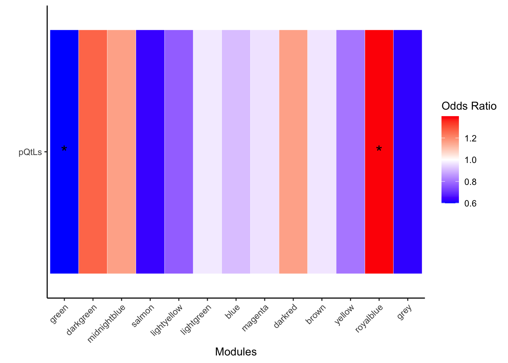

DNA_damage_pQTLs
Omar Johnson
2024-12-08
Last updated: 2024-12-07
Checks: 7 0
Knit directory: DNA_damage_DOX/
This reproducible R Markdown analysis was created with workflowr (version 1.7.1). The Checks tab describes the reproducibility checks that were applied when the results were created. The Past versions tab lists the development history.
Great! Since the R Markdown file has been committed to the Git repository, you know the exact version of the code that produced these results.
Great job! The global environment was empty. Objects defined in the global environment can affect the analysis in your R Markdown file in unknown ways. For reproduciblity it’s best to always run the code in an empty environment.
The command set.seed(20241207) was run prior to running
the code in the R Markdown file. Setting a seed ensures that any results
that rely on randomness, e.g. subsampling or permutations, are
reproducible.
Great job! Recording the operating system, R version, and package versions is critical for reproducibility.
Nice! There were no cached chunks for this analysis, so you can be confident that you successfully produced the results during this run.
Great job! Using relative paths to the files within your workflowr project makes it easier to run your code on other machines.
Great! You are using Git for version control. Tracking code development and connecting the code version to the results is critical for reproducibility.
The results in this page were generated with repository version ffc97d7. See the Past versions tab to see a history of the changes made to the R Markdown and HTML files.
Note that you need to be careful to ensure that all relevant files for
the analysis have been committed to Git prior to generating the results
(you can use wflow_publish or
wflow_git_commit). workflowr only checks the R Markdown
file, but you know if there are other scripts or data files that it
depends on. Below is the status of the Git repository when the results
were generated:
Ignored files:
Ignored: .DS_Store
Note that any generated files, e.g. HTML, png, CSS, etc., are not included in this status report because it is ok for generated content to have uncommitted changes.
These are the previous versions of the repository in which changes were
made to the R Markdown (analysis/DOX_prot_pQTL_Fig3.Rmd)
and HTML (docs/DOX_prot_pQTL_Fig3.html) files. If you’ve
configured a remote Git repository (see ?wflow_git_remote),
click on the hyperlinks in the table below to view the files as they
were in that past version.
| File | Version | Author | Date | Message |
|---|---|---|---|---|
| Rmd | ffc97d7 | Omar-Johnson | 2024-12-07 | Publish Fig. 3 |
Load Libraries
Read in Data
Functions
perform_fisher_test_FP <- function(vec1, vec2, vec1_name, vec2_name, plot = FALSE) {
# Create labeled factors for vec1 and vec2
vec1_label <- factor(vec1, labels = c(paste0("Not", vec1_name), paste0("Is", vec1_name)))
vec2_label <- factor(vec2, labels = c(paste0("Not", vec2_name), paste0("Is", vec2_name)))
# Create contingency table with labeled factors
table <- table(vec1_label, vec2_label)
# Perform Fisher's exact test
test_result <- fisher.test(table)
p_value <- test_result$p.value
OR <- test_result$estimate
CI <- test_result$conf.int
# Prepare result
result <- list(
ContingencyTable = table,
PValue = p_value,
Odds_ratio = test_result$estimate,
Confidence_Interval = test_result$conf.int
)
# Generate plot if required
if (plot) {
# Convert table to data frame for ggplot
table_df <- as.data.frame(as.table(table))
colnames(table_df) <- c("vec1_label", "vec2_label", "Freq")
# Calculate totals for each vec1_label
totals <- aggregate(Freq ~ vec1_label, data = table_df, sum)
# Merge totals with table_df and calculate percentages
table_df <- merge(table_df, totals, by = "vec1_label", all.x = TRUE)
table_df$Percentage <- with(table_df, Freq.x / Freq.y * 100)
table_df$Group <- table_df$vec2_label
# Stacked bar chart
p <- ggplot(table_df, aes(x = vec1_label, y = Percentage, fill = Group)) +
geom_bar(stat = "identity", position = "stack") + # Adjust position to "stack"
facet_wrap(~ vec1_label) +
theme_minimal() +
labs(x = vec1_name, y = "Percentage", fill = vec2_name, title = paste("")) +
theme(axis.text.x = element_text(angle = 45, hjust = 1))
result$Plot <- p
}
return(result)
}
group_by_deciles <- function(x) {
deciles <- cut(x,
breaks = quantile(x, probs = seq(0, 1, by = 0.1), na.rm = TRUE),
include.lowest = TRUE,
labels = paste0("D", 1:10))
return(deciles)
}Fig-3B pQTL enrichment test
#### Forest plots ####
pQTL_data <- read.csv(file = "/Users/omarjohnson/Documents/Projects/Dox_Proteomics/Data/Proteomics/Data_sets/GWAS/pQTL_Genetic_reg_plasmaproteome.csv", header = TRUE)
# Get the data frame with expressed proteins in the set
pQTL_data_exp <- pQTL_data[pQTL_data$Target.UniProt %in% Toptable_Modules$Protein, ]
# Get All proteins mapped to at least one cis and one trans
pQTL_data_Trans <- pQTL_data_exp[pQTL_data_exp$cis.trans == "trans", ]
pQTL_data_Cis <- pQTL_data_exp[pQTL_data_exp$cis.trans == "cis", ]
# Count them
All_pQTL <- pQTL_data$Target.UniProt %>% unique()
Trans_pQTL <- pQTL_data_Trans$Target.UniProt %>% unique()
Cis_pQTL <- pQTL_data_Cis$Target.UniProt %>% unique()
# Get Sets
pQTL_data_summary_merged <- Toptable_Modules
# Append data frame to contain pQTL info
pQTL_data_summary_merged <- pQTL_data_summary_merged %>%
mutate(All_pQTL = if_else(pQTL_data_summary_merged$Protein %in% All_pQTL, 1, 0))
pQTL_data_summary_merged <- pQTL_data_summary_merged %>%
mutate(Trans_pQTL = if_else(pQTL_data_summary_merged$Protein %in% Trans_pQTL, 1, 0))
pQTL_data_summary_merged <- pQTL_data_summary_merged %>%
mutate(Cis_pQTL = if_else(pQTL_data_summary_merged$Protein %in% Cis_pQTL, 1, 0))
# Annotate if protein is hub
pQTL_data_summary_merged <- pQTL_data_summary_merged %>%
mutate(Is_hub = if_else(pQTL_data_summary_merged$Protein %in% hubs$Gene, 1, 0))
# Annotate if protein is DA
pQTL_data_summary_merged <- pQTL_data_summary_merged %>%
mutate(Is_DA = if_else(P.Value < 0.05, 1, 0))
# Annotate if protein is DOX corr.
pQTL_data_summary_merged <- pQTL_data_summary_merged %>%
mutate(Is_DOXcorr = if_else( Modules %in% c("green","darkgreen","midnightblue","salmon","lightyellow"), 1, 0))
# Get data frame of just the hub proteins
pQTL_data_summary_merged_hub <- pQTL_data_summary_merged[pQTL_data_summary_merged$Protein %in% hubs$Gene, ]
# Cis
FP_Cis_DOXcor <- perform_fisher_test_FP(vec1 = pQTL_data_summary_merged$Is_DOXcorr, vec2 = pQTL_data_summary_merged$Cis_pQTL, vec1_name = "", vec2_name = "", plot = FALSE)
FP_Cis_Hub <- perform_fisher_test_FP(vec1 = pQTL_data_summary_merged$Is_hub, vec2 = pQTL_data_summary_merged$Cis_pQTL, vec1_name = "", vec2_name = "", plot = FALSE)
FP_Cis_DOXcorhub <- perform_fisher_test_FP(vec1 = pQTL_data_summary_merged_hub$Is_DOXcorr, vec2 = pQTL_data_summary_merged_hub$Cis_pQTL, vec1_name = "", vec2_name = "", plot = FALSE)
# Trans
FP_Trans_DOXcor <- perform_fisher_test_FP(vec1 = pQTL_data_summary_merged$Is_DOXcorr, vec2 = pQTL_data_summary_merged$Trans_pQTL, vec1_name = "", vec2_name = "", plot = FALSE)
FP_Trans_Hub <- perform_fisher_test_FP(vec1 = pQTL_data_summary_merged$Is_hub, vec2 = pQTL_data_summary_merged$Trans_pQTL, vec1_name = "", vec2_name = "", plot = FALSE)
FP_Trans_DOXcorhub <- perform_fisher_test_FP(vec1 = pQTL_data_summary_merged_hub$Is_DOXcorr, vec2 = pQTL_data_summary_merged_hub$Trans_pQTL, vec1_name = "", vec2_name = "", plot = FALSE)
FP_List <- list(FP_Cis_DOXcor, FP_Cis_Hub, FP_Cis_DOXcorhub, FP_Trans_DOXcor, FP_Trans_Hub, FP_Trans_DOXcorhub)
FP_DF <- data.frame(
Odds_ratio = numeric(length(FP_List)),
Lower_CI = numeric(length(FP_List)),
Upper_CI = numeric(length(FP_List)),
Pval = numeric(length(FP_List))
)
for (i in 1:length(FP_List)) {
FP_DF$Odds_ratio[i] <- FP_List[[i]]$Odds_ratio
FP_DF$Lower_CI[i] <- FP_List[[i]]$Confidence_Interval[1]
FP_DF$Upper_CI[i] <- FP_List[[i]]$Confidence_Interval[2]
FP_DF$Pval[i] <- FP_List[[i]]$PValue
}
FP_DF Odds_ratio Lower_CI Upper_CI Pval
1 0.7002624 0.5768312 0.8488705 2.156762e-04
2 1.0782950 0.7770841 1.4725084 6.304725e-01
3 0.2255299 0.1010994 0.4648597 5.834571e-06
4 0.8169640 0.6879394 0.9695398 1.910247e-02
5 1.0402191 0.7737982 1.3815625 7.731600e-01
6 0.3507411 0.1857923 0.6404221 2.373421e-04# Add row names for the labels in the forest plot
FP_DF$Label <- c("FP_Cis_DOXcor", "FP_Cis_Hub", "FP_Cis_DOXcorhub", "FP_Trans_DOXcor", "FP_Trans_Hub", "FP_Trans_DOXcorhub")
FP_DF$Label <- factor(FP_DF$Label, levels = rev(c("FP_Cis_Hub", "FP_Trans_Hub","FP_Cis_DOXcor", "FP_Trans_DOXcor", "FP_Cis_DOXcorhub", "FP_Trans_DOXcorhub")))
FP_DF Odds_ratio Lower_CI Upper_CI Pval Label
1 0.7002624 0.5768312 0.8488705 2.156762e-04 FP_Cis_DOXcor
2 1.0782950 0.7770841 1.4725084 6.304725e-01 FP_Cis_Hub
3 0.2255299 0.1010994 0.4648597 5.834571e-06 FP_Cis_DOXcorhub
4 0.8169640 0.6879394 0.9695398 1.910247e-02 FP_Trans_DOXcor
5 1.0402191 0.7737982 1.3815625 7.731600e-01 FP_Trans_Hub
6 0.3507411 0.1857923 0.6404221 2.373421e-04 FP_Trans_DOXcorhubggplot(FP_DF, aes(x = Label, y = Odds_ratio, ymin = Lower_CI, ymax = Upper_CI)) +
geom_pointrange() +
geom_hline(yintercept = 1, linetype = "dashed", color = "red") +
coord_flip() +
labs(
title = "Forest Plot of Odds Ratios",
x = "",
y = "Odds Ratio (95% CI)"
) +
theme_minimal()
FP_DF Odds_ratio Lower_CI Upper_CI Pval Label
1 0.7002624 0.5768312 0.8488705 2.156762e-04 FP_Cis_DOXcor
2 1.0782950 0.7770841 1.4725084 6.304725e-01 FP_Cis_Hub
3 0.2255299 0.1010994 0.4648597 5.834571e-06 FP_Cis_DOXcorhub
4 0.8169640 0.6879394 0.9695398 1.910247e-02 FP_Trans_DOXcor
5 1.0402191 0.7737982 1.3815625 7.731600e-01 FP_Trans_Hub
6 0.3507411 0.1857923 0.6404221 2.373421e-04 FP_Trans_DOXcorhub# Add a new column to indicate "cis" or "trans"
FP_DF$Type <- ifelse(grepl("Cis", FP_DF$Label), "Cis-pQTL", "Trans-pQTL")
# Reorder the levels
FP_DF$Label <- factor(FP_DF$Label, levels = rev(c("FP_Cis_Hub", "FP_Trans_Hub", "FP_Cis_DOXcor", "FP_Trans_DOXcor", "FP_Cis_DOXcorhub", "FP_Trans_DOXcorhub")))
# Plot with color based on "Type"
ggplot(FP_DF, aes(x = Label, y = Odds_ratio, ymin = Lower_CI, ymax = Upper_CI, color = Type)) +
geom_pointrange() +
geom_hline(yintercept = 1, linetype = "dashed", color = "red") +
coord_flip() +
labs(
title = "pQTL enrichment among network proteins",
x = "",
y = "Odds of being pQTL (95% CI)"
) +
theme_classic() +
scale_color_manual(values = c("Cis-pQTL" = "dodgerblue4", "Trans-pQTL" = "orange3"))
Fig-3C cis/tran pQTL SNP beta
#### Cis or trans SNP-Effect size ####
# Read in data from UK biobank paper: https://doi.org/10.1038/s41586-023-06592-6
pQTL_data <- read.csv(file = "/Users/omarjohnson/Documents/Projects/Dox_Proteomics/Data/Proteomics/Data_sets/GWAS/pQTL_Genetic_reg_plasmaproteome.csv", header = TRUE)
# Get the data frame with expressed proteins in the set
pQTL_data_exp <- pQTL_data[pQTL_data$Target.UniProt %in% Toptable_Modules$Protein, ]
# Get All proteins mapped to at least one cis and one trans
pQTL_data_Trans <- pQTL_data_exp[pQTL_data_exp$cis.trans == "trans", ]
pQTL_data_Cis <- pQTL_data_exp[pQTL_data_exp$cis.trans == "cis", ]
# Summarize All pQTL effect sizes
pQTL_data_summary <- pQTL_data_exp %>%
group_by(Target.UniProt) %>%
arrange(BETA) %>%
summarise(
Mean_BETA = mean(abs(BETA), na.rm = TRUE),
Median_BETA = median(abs(BETA), na.rm = TRUE),
Max_BETA = max(abs(BETA), na.rm = TRUE)
)
pQTL_data_summary$Max_BETA %>% hist()
# Summarize Trans pQTL effect sizes
Trans_pQTL_data_summary <- pQTL_data_Trans %>%
group_by(Target.UniProt) %>%
arrange(BETA) %>%
summarise(
Mean_BETA = mean(abs(BETA), na.rm = TRUE),
Median_BETA = median(abs(BETA), na.rm = TRUE),
Max_BETA = max(abs(BETA), na.rm = TRUE)
)
Trans_pQTL_data_summary$Max_BETA %>% hist()
Trans_pQTL_data_summary$Max_BETA %>% median()[1] 0.0985# Summarize Cis pQTL effect sizes
Cis_pQTL_data_summary <- pQTL_data_Cis %>%
group_by(Target.UniProt) %>%
arrange(BETA) %>%
summarise(
Mean_BETA = mean(abs(BETA), na.rm = TRUE),
Median_BETA = median(abs(BETA), na.rm = TRUE),
Max_BETA = max(abs(BETA), na.rm = TRUE)
)
Cis_pQTL_data_summary$Max_BETA %>% hist()
Cis_pQTL_data_summary$Max_BETA %>% median()[1] 0.2295# Merge pQTL SNP Data with Toptable_Modules- Cis or Trans
pQTL_data_merged <- merge(Toptable_Modules, pQTL_data_summary, by.x ="Protein" , by.y ="Target.UniProt" )
Cis_pQTL_data_merged <- merge(Toptable_Modules, Cis_pQTL_data_summary, by.x ="Protein" , by.y ="Target.UniProt" )
Trans_pQTL_data_merged <- merge(Toptable_Modules, Trans_pQTL_data_summary, by.x ="Protein" , by.y ="Target.UniProt" )
# Hub vs not hub
# Network differences in effect size
All_pQTL_DAPs <- pQTL_data_merged[pQTL_data_merged$Protein %in% hubs$Gene, ]
All_pQTL_NonDAPs <- pQTL_data_merged[!pQTL_data_merged$Protein %in% hubs$Gene, ]
Cis_pQTL_DAPs <- Cis_pQTL_data_merged[Cis_pQTL_data_merged$Protein %in% hubs$Gene, ]
Cis_pQTL_NonDAPs <- Cis_pQTL_data_merged[!Cis_pQTL_data_merged$Protein %in% hubs$Gene, ]
Trans_pQTL_DAPs <- Trans_pQTL_data_merged[Trans_pQTL_data_merged$Protein %in% hubs$Gene, ]
Trans_pQTL_NonDAPs <- Trans_pQTL_data_merged[!Trans_pQTL_data_merged$Protein %in% hubs$Gene, ]
# Test
# 1.
wilcox.test(All_pQTL_DAPs$Max_BETA , All_pQTL_NonDAPs$Max_BETA)
Wilcoxon rank sum test with continuity correction
data: All_pQTL_DAPs$Max_BETA and All_pQTL_NonDAPs$Max_BETA
W = 23719, p-value = 0.77
alternative hypothesis: true location shift is not equal to 0# 2.
wilcox.test(Cis_pQTL_DAPs$Max_BETA , Cis_pQTL_NonDAPs$Max_BETA)
Wilcoxon rank sum test with continuity correction
data: Cis_pQTL_DAPs$Max_BETA and Cis_pQTL_NonDAPs$Max_BETA
W = 12867, p-value = 0.3136
alternative hypothesis: true location shift is not equal to 0# 3.
wilcox.test(Trans_pQTL_DAPs$Max_BETA , Trans_pQTL_NonDAPs$Max_BETA)
Wilcoxon rank sum test with continuity correction
data: Trans_pQTL_DAPs$Max_BETA and Trans_pQTL_NonDAPs$Max_BETA
W = 19615, p-value = 0.744
alternative hypothesis: true location shift is not equal to 0# DOX corr. vs not DOX corr.
# Network differences in effect size
All_pQTL_DAPs <- pQTL_data_merged[pQTL_data_merged$Modules %in% c("green", "darkgreen","midnightblue","salmon","lightyellow"), ]
All_pQTL_NonDAPs <- pQTL_data_merged[!pQTL_data_merged$Modules %in% c("green", "darkgreen","midnightblue","salmon","lightyellow"), ]
Cis_pQTL_DAPs <- Cis_pQTL_data_merged[Cis_pQTL_data_merged$Modules %in% c("green", "darkgreen","midnightblue","salmon","lightyellow"), ]
Cis_pQTL_NonDAPs <- Cis_pQTL_data_merged[!Cis_pQTL_data_merged$Modules %in% c("green", "darkgreen","midnightblue","salmon","lightyellow"), ]
Trans_pQTL_DAPs <- Trans_pQTL_data_merged[Trans_pQTL_data_merged$Modules %in% c("green", "darkgreen","midnightblue","salmon","lightyellow"), ]
Trans_pQTL_NonDAPs <- Trans_pQTL_data_merged[!Trans_pQTL_data_merged$Modules %in% c("green", "darkgreen","midnightblue","salmon","lightyellow"), ]
# Test
# 1.
wilcox.test(All_pQTL_DAPs$Max_BETA , All_pQTL_NonDAPs$Max_BETA)
Wilcoxon rank sum test with continuity correction
data: All_pQTL_DAPs$Max_BETA and All_pQTL_NonDAPs$Max_BETA
W = 54728, p-value = 0.02904
alternative hypothesis: true location shift is not equal to 0# 2.
wilcox.test(Cis_pQTL_DAPs$Max_BETA , Cis_pQTL_NonDAPs$Max_BETA)
Wilcoxon rank sum test with continuity correction
data: Cis_pQTL_DAPs$Max_BETA and Cis_pQTL_NonDAPs$Max_BETA
W = 29894, p-value = 0.456
alternative hypothesis: true location shift is not equal to 0# 3.
wilcox.test(Trans_pQTL_DAPs$Max_BETA , Trans_pQTL_NonDAPs$Max_BETA)
Wilcoxon rank sum test with continuity correction
data: Trans_pQTL_DAPs$Max_BETA and Trans_pQTL_NonDAPs$Max_BETA
W = 48899, p-value = 0.1127
alternative hypothesis: true location shift is not equal to 0# Now showing only the ones that you want
# Create a data frame
pLI_Hubs_DF_Boxplot <- data.frame(
# 1. Generate values to compare
values = c(
Cis_pQTL_DAPs$Max_BETA,
Cis_pQTL_NonDAPs$Max_BETA,
Trans_pQTL_DAPs$Max_BETA,
Trans_pQTL_NonDAPs$Max_BETA),
# 2. Factor values to compare
group = factor(
c(rep("Cis_DOXcor.", length(Cis_pQTL_DAPs$Max_BETA)),
c(rep("Cis_Not_DOXcor.", length(Cis_pQTL_NonDAPs$Max_BETA)),
c(rep("Trans_DOXcor.", length(Trans_pQTL_DAPs$Max_BETA)),
c(rep("Trans_Not_DOXcor.",length(Trans_pQTL_NonDAPs$Max_BETA))
))))))
# Create boxplot
ggplot(pLI_Hubs_DF_Boxplot, aes(x = group, y = values)) +
geom_boxplot() +
labs(x = "Group", y = "pQTL-Max-BETA") +
ggtitle("pQTL max SNP effect size: DOXcor. vs Not DOXcor.")+
theme_classic()+
coord_cartesian(ylim = c(0, 1.0))+
theme(axis.text.x = element_text(color = "grey20", size = 10, angle = 90, hjust = .5, vjust = .5, face = "plain"))
# DOX corr. vs not DOX corr. hubs
All_pQTL_DAPs <- pQTL_data_merged[(pQTL_data_merged$Modules %in% c("green", "darkgreen","midnightblue","salmon","lightyellow")) & (pQTL_data_merged$Protein %in% hubs$Gene), ]
All_pQTL_NonDAPs <- pQTL_data_merged[(!pQTL_data_merged$Modules %in% c("green", "darkgreen","midnightblue","salmon","lightyellow")) & (pQTL_data_merged$Protein %in% hubs$Gene) , ]
Cis_pQTL_DAPs <- Cis_pQTL_data_merged[(Cis_pQTL_data_merged$Modules %in% c("green", "darkgreen","midnightblue","salmon","lightyellow")) & (Cis_pQTL_data_merged$Protein %in% hubs$Gene) , ]
Cis_pQTL_NonDAPs <- Cis_pQTL_data_merged[(!Cis_pQTL_data_merged$Modules %in% c("green", "darkgreen","midnightblue","salmon","lightyellow")) & (Cis_pQTL_data_merged$Protein %in% hubs$Gene) , ]
Trans_pQTL_DAPs <- Trans_pQTL_data_merged[(Trans_pQTL_data_merged$Modules %in% c("green", "darkgreen","midnightblue","salmon","lightyellow")) & (Trans_pQTL_data_merged$Protein %in% hubs$Gene) , ]
Trans_pQTL_NonDAPs <- Trans_pQTL_data_merged[(!Trans_pQTL_data_merged$Modules %in% c("green", "darkgreen","midnightblue","salmon","lightyellow")) & (Trans_pQTL_data_merged$Protein %in% hubs$Gene), ]
# Test
# 1.
wilcox.test(All_pQTL_DAPs$Max_BETA , All_pQTL_NonDAPs$Max_BETA)
Wilcoxon rank sum test with continuity correction
data: All_pQTL_DAPs$Max_BETA and All_pQTL_NonDAPs$Max_BETA
W = 286.5, p-value = 0.001232
alternative hypothesis: true location shift is not equal to 0# 2.
wilcox.test(Cis_pQTL_DAPs$Max_BETA , Cis_pQTL_NonDAPs$Max_BETA)Warning in wilcox.test.default(Cis_pQTL_DAPs$Max_BETA,
Cis_pQTL_NonDAPs$Max_BETA): cannot compute exact p-value with ties
Wilcoxon rank sum test with continuity correction
data: Cis_pQTL_DAPs$Max_BETA and Cis_pQTL_NonDAPs$Max_BETA
W = 106.5, p-value = 0.007926
alternative hypothesis: true location shift is not equal to 0# 3.
wilcox.test(Trans_pQTL_DAPs$Max_BETA , Trans_pQTL_NonDAPs$Max_BETA)Warning in wilcox.test.default(Trans_pQTL_DAPs$Max_BETA,
Trans_pQTL_NonDAPs$Max_BETA): cannot compute exact p-value with ties
Wilcoxon rank sum test with continuity correction
data: Trans_pQTL_DAPs$Max_BETA and Trans_pQTL_NonDAPs$Max_BETA
W = 277.5, p-value = 0.02179
alternative hypothesis: true location shift is not equal to 0# Now showing only the ones that you want:
# Create a data frame
pLI_Hubs_DF_Boxplot <- data.frame(
# 1. Generate values to compare
values = c(
Cis_pQTL_DAPs$Max_BETA,
Cis_pQTL_NonDAPs$Max_BETA,
Trans_pQTL_DAPs$Max_BETA,
Trans_pQTL_NonDAPs$Max_BETA
),
# 2. Factor values to compare
group = factor(
c(rep("Cis_DOXcor.Hub", length(Cis_pQTL_DAPs$Max_BETA)),
c(rep("Cis_Not_DOXcor. Hub", length(Cis_pQTL_NonDAPs$Max_BETA)),
c(rep("Trans_DOXcor. Hub", length(Trans_pQTL_DAPs$Max_BETA)),
c(rep("Trans_Not_DOXcor. Hub",length(Trans_pQTL_NonDAPs$Max_BETA))
))))))
# Create boxplot
ggplot(pLI_Hubs_DF_Boxplot, aes(x = group, y = values)) +
geom_boxplot() +
labs(x = "", y = "Max-BETA") +
ggtitle("pQTL max SNP effects Hub-DOXcor. vs Hub-Not DOXcor.")+
theme_classic()+
coord_cartesian(ylim = c(0, 1.0))+
theme(axis.text.x = element_text(color = "grey20", size = 10, angle = 90, hjust = .5, vjust = .5, face = "plain"))
Fig-3D pQTLs across connectivities
#### pQTL connectivity ####
# Function to generate decile labels
pQTL_pro_unique <- pQTL_data$Target.UniProt %>% unique()
kIN_DF_TT <- Toptable_Modules
kIN_DF_TT2 <- kIN_DF_TT
# Generate deciles
kIN_DF_TT2$Decile <- group_by_deciles(kIN_DF_TT2$Norm_kOut)
pQTL_pro_unique_exp <- intersect(pQTL_pro_unique, Toptable_Modules$Protein)
# Check if a protein is a cis or trans pQTL protein
kIN_DF_TT2$is_cis_pQTL <- kIN_DF_TT2$Protein %in% Cis_pQTL_data_summary$Target.UniProt
kIN_DF_TT2$is_trans_pQTL <- kIN_DF_TT2$Protein %in% Trans_pQTL_data_summary$Target.UniProt
# Calculate the total number of proteins in each decile
total_proteins_per_decile <- kIN_DF_TT2 %>%
group_by(Decile) %>%
summarise(total_proteins = n())
total_proteins_per_decile# A tibble: 10 × 2
Decile total_proteins
<fct> <int>
1 D1 418
2 D2 418
3 D3 418
4 D4 417
5 D5 418
6 D6 418
7 D7 417
8 D8 418
9 D9 418
10 D10 418# Calculate the number of cis pQTL proteins in each decile
cis_pQTL_proteins_per_decile <- kIN_DF_TT2 %>%
filter(is_cis_pQTL) %>%
group_by(Decile) %>%
summarise(cis_pQTL_proteins = n())
# Calculate the number of trans pQTL proteins in each decile
trans_pQTL_proteins_per_decile <- kIN_DF_TT2 %>%
filter(is_trans_pQTL) %>%
group_by(Decile) %>%
summarise(trans_pQTL_proteins = n())
# Merge the data frames
decile_summary <- total_proteins_per_decile %>%
left_join(cis_pQTL_proteins_per_decile, by = "Decile") %>%
left_join(trans_pQTL_proteins_per_decile, by = "Decile")
# Replace NA values with 0 (for deciles with no pQTL proteins)
decile_summary$cis_pQTL_proteins[is.na(decile_summary$cis_pQTL_proteins)] <- 0
decile_summary$trans_pQTL_proteins[is.na(decile_summary$trans_pQTL_proteins)] <- 0
# Calculate the percentage of cis and trans pQTL proteins in each decile
decile_summary <- decile_summary %>%
mutate(percentage_cis_pQTL = (cis_pQTL_proteins / total_proteins) * 100,
percentage_trans_pQTL = (trans_pQTL_proteins / total_proteins) * 100)
# Reshape the data for plotting
decile_summary_long <- decile_summary %>%
pivot_longer(cols = starts_with("percentage_"), names_to = "Type", values_to = "Percentage")
# Replace "percentage_" with an empty string for better labels
decile_summary_long$Type <- gsub("percentage_", "", decile_summary_long$Type)
# Plot the data
ggplot(decile_summary_long, aes(x = Decile, y = Percentage, color = Type, group = Type)) +
geom_line() +
geom_point(size = 2) +
labs(
title = "pQTL proportion across kIN deciles",
x = "Decile",
y = "% pQTL"
) +
theme_minimal() +
scale_color_manual(values = c("cis_pQTL" = "darkblue", "trans_pQTL" = "tan3")) +
theme(axis.text.x = element_text(angle = 45, hjust = 1))+
coord_cartesian(ylim = c(0,25))
kIN_DF_TT2_DOX <- kIN_DF_TT2[kIN_DF_TT2$Modules %in% c("green", "darkgreen","midnightblue","salmon","lightyellow"), ]
kIN_DF_TT2_DOX$Decile <- group_by_deciles(kIN_DF_TT2_DOX$Norm_kIN)
# Check if a protein is a cis or trans pQTL protein
kIN_DF_TT2_DOX$is_cis_pQTL <- kIN_DF_TT2_DOX$Protein %in% Cis_pQTL_data_summary$Target.UniProt
kIN_DF_TT2_DOX$is_trans_pQTL <- kIN_DF_TT2_DOX$Protein %in% Trans_pQTL_data_summary$Target.UniProt
# Calculate the total number of proteins in each decile
total_proteins_per_decile <- kIN_DF_TT2_DOX %>%
group_by(Decile) %>%
summarise(total_proteins = n())
# Calculate the number of cis pQTL proteins in each decile
cis_pQTL_proteins_per_decile <- kIN_DF_TT2_DOX %>%
filter(is_cis_pQTL) %>%
group_by(Decile) %>%
summarise(cis_pQTL_proteins = n())
# Calculate the number of trans pQTL proteins in each decile
trans_pQTL_proteins_per_decile <- kIN_DF_TT2_DOX %>%
filter(is_trans_pQTL) %>%
group_by(Decile) %>%
summarise(trans_pQTL_proteins = n())
# Merge the data frames
decile_summary <- total_proteins_per_decile %>%
left_join(cis_pQTL_proteins_per_decile, by = "Decile") %>%
left_join(trans_pQTL_proteins_per_decile, by = "Decile")
# Replace NA values with 0 (for deciles with no pQTL proteins)
decile_summary$cis_pQTL_proteins[is.na(decile_summary$cis_pQTL_proteins)] <- 0
decile_summary$trans_pQTL_proteins[is.na(decile_summary$trans_pQTL_proteins)] <- 0
# Calculate the percentage of cis and trans pQTL proteins in each decile
decile_summary <- decile_summary %>%
mutate(percentage_cis_pQTL = (cis_pQTL_proteins / total_proteins) * 100,
percentage_trans_pQTL = (trans_pQTL_proteins / total_proteins) * 100)
# Reshape the data for plotting
decile_summary_long <- decile_summary %>%
pivot_longer(cols = starts_with("percentage_"), names_to = "Type", values_to = "Percentage")
# Replace "percentage_" with an empty string for better labels
decile_summary_long$Type <- gsub("percentage_", "", decile_summary_long$Type)
# Plot the data
Plot1 <- ggplot(decile_summary_long, aes(x = Decile, y = Percentage, color = Type, group = Type)) +
geom_line() +
geom_point(size = 2) +
labs(
title = "DOXcorr pQTL proportion across kIN deciles",
x = "Decile",
y = "% pQTL"
) +
theme_minimal() +
scale_color_manual(values = c("cis_pQTL" = "darkblue", "trans_pQTL" = "tan3")) +
theme(axis.text.x = element_text(angle = 45, hjust = 1))+
coord_cartesian(ylim = c(2.5,25))
kIN_DF_TT2_NOT_DOX <- kIN_DF_TT2[!kIN_DF_TT2$Modules %in% c("green", "darkgreen","midnightblue","salmon","lightyellow"), ]
kIN_DF_TT2_NOT_DOX$Decile <- group_by_deciles(kIN_DF_TT2_NOT_DOX$Norm_kIN)
# Check if a protein is a cis or trans pQTL protein
kIN_DF_TT2_NOT_DOX$is_cis_pQTL <- kIN_DF_TT2_NOT_DOX$Protein %in% Cis_pQTL_data_summary$Target.UniProt
kIN_DF_TT2_NOT_DOX$is_trans_pQTL <- kIN_DF_TT2_NOT_DOX$Protein %in% Trans_pQTL_data_summary$Target.UniProt
# Calculate the total number of proteins in each decile
total_proteins_per_decile <- kIN_DF_TT2_NOT_DOX %>%
group_by(Decile) %>%
summarise(total_proteins = n())
# Calculate the number of cis pQTL proteins in each decile
cis_pQTL_proteins_per_decile <- kIN_DF_TT2_NOT_DOX %>%
filter(is_cis_pQTL) %>%
group_by(Decile) %>%
summarise(cis_pQTL_proteins = n())
# Calculate the number of trans pQTL proteins in each decile
trans_pQTL_proteins_per_decile <- kIN_DF_TT2_NOT_DOX %>%
filter(is_trans_pQTL) %>%
group_by(Decile) %>%
summarise(trans_pQTL_proteins = n())
# Merge the data frames
decile_summary <- total_proteins_per_decile %>%
left_join(cis_pQTL_proteins_per_decile, by = "Decile") %>%
left_join(trans_pQTL_proteins_per_decile, by = "Decile")
# Replace NA values with 0 (for deciles with no pQTL proteins)
decile_summary$cis_pQTL_proteins[is.na(decile_summary$cis_pQTL_proteins)] <- 0
decile_summary$trans_pQTL_proteins[is.na(decile_summary$trans_pQTL_proteins)] <- 0
# Calculate the percentage of cis and trans pQTL proteins in each decile
decile_summary <- decile_summary %>%
mutate(percentage_cis_pQTL = (cis_pQTL_proteins / total_proteins) * 100,
percentage_trans_pQTL = (trans_pQTL_proteins / total_proteins) * 100)
# Reshape the data for plotting
decile_summary_long <- decile_summary %>%
pivot_longer(cols = starts_with("percentage_"), names_to = "Type", values_to = "Percentage")
# Replace "percentage_" with an empty string for better labels
decile_summary_long$Type <- gsub("percentage_", "", decile_summary_long$Type)
# Plot the data
Plot2 <- ggplot(decile_summary_long, aes(x = Decile, y = Percentage, color = Type, group = Type)) +
geom_line() +
geom_point(size = 2) +
labs(
title = "Non-DOXcorr pQTL proportion across kIN deciles",
x = "Decile",
y = "% pQTL"
) +
theme_minimal() +
scale_color_manual(values = c("cis_pQTL" = "darkblue", "trans_pQTL" = "tan3")) +
theme(axis.text.x = element_text(angle = 45, hjust = 1))+
coord_cartesian(ylim = c(2.5,25))
Plot1 + Plot2
### ALL PQTLs
#
kIN_DF_TT2_DOX <- kIN_DF_TT2[kIN_DF_TT2$Modules %in% c("green", "darkgreen","midnightblue","salmon","lightyellow"), ]
kIN_DF_TT2_DOX$Decile <- group_by_deciles(kIN_DF_TT2_DOX$Norm_kIN)
# Check if a protein is a pQTL protein
kIN_DF_TT2_DOX$is_pQTL <- kIN_DF_TT2_DOX$Protein %in% pQTL_pro_unique_exp
# Calculate the total number of proteins in each decile
total_proteins_per_decile <- kIN_DF_TT2_DOX %>%
group_by(Decile) %>%
summarise(total_proteins = n())
# Calculate the number of pQTL proteins in each decile
pQTL_proteins_per_decile <- kIN_DF_TT2_DOX %>%
filter(is_pQTL) %>%
group_by(Decile) %>%
summarise(pQTL_proteins = n())
# Merge the two data frames
decile_summary <- merge(total_proteins_per_decile, pQTL_proteins_per_decile, by = "Decile", all.x = TRUE)
# Replace NA values with 0 (for deciles with no pQTL proteins)
decile_summary$pQTL_proteins[is.na(decile_summary$pQTL_proteins)] <- 0
# Calculate the percentage of pQTL proteins in each decile
decile_summary <- decile_summary %>%
mutate(percentage_pQTL = (pQTL_proteins / total_proteins) * 100)
decile_summary_DOXcorr <- decile_summary
kIN_DF_TT2_NOT_DOX <- kIN_DF_TT2[!kIN_DF_TT2$Modules %in% c("green", "darkgreen","midnightblue","salmon","lightyellow"), ]
kIN_DF_TT2_NOT_DOX$Decile <- group_by_deciles(kIN_DF_TT2_NOT_DOX$Norm_kIN)
# Check if a protein is a pQTL protein
kIN_DF_TT2_NOT_DOX$is_pQTL <- kIN_DF_TT2_NOT_DOX$Protein %in% pQTL_pro_unique_exp
# Calculate the total number of proteins in each decile
total_proteins_per_decile <- kIN_DF_TT2_NOT_DOX %>%
group_by(Decile) %>%
summarise(total_proteins = n())
# Calculate the number of pQTL proteins in each decile
pQTL_proteins_per_decile <- kIN_DF_TT2_NOT_DOX %>%
filter(is_pQTL) %>%
group_by(Decile) %>%
summarise(pQTL_proteins = n())
# Merge the two data frames
decile_summary <- merge(total_proteins_per_decile, pQTL_proteins_per_decile, by = "Decile", all.x = TRUE)
# Replace NA values with 0 (for deciles with no pQTL proteins)
decile_summary$pQTL_proteins[is.na(decile_summary$pQTL_proteins)] <- 0
# Calculate the percentage of pQTL proteins in each decile
decile_summary <- decile_summary %>%
mutate(percentage_pQTL = (pQTL_proteins / total_proteins) * 100)
decile_summary_NOTDOX <- decile_summary
decile_summary_DOXcorr$Type <- c("DOX-corr.")
decile_summary_NOTDOX$Type <- c("Not-DOX-corr.")
decile_summary_ALL <- rbind(decile_summary_DOXcorr,decile_summary_NOTDOX )
# Define the colors for each type
type_colors <- c("DOX-corr." = "red", "Not-DOX-corr." = "blue")
# Plot the data
ggplot(decile_summary_ALL, aes(x = Decile, y = percentage_pQTL, color = Type, group = Type)) +
geom_line() +
geom_point(size = 2) +
labs(
title = "Percentage of pQTL Proteins Across Deciles",
x = "Decile",
y = "Percentage of pQTL Proteins"
) +
theme_minimal() +
theme(axis.text.x = element_text(angle = 45, hjust = 1)) +
scale_color_manual(values = type_colors)
decile_summary_ALL Decile total_proteins pQTL_proteins percentage_pQTL Type
1 D1 202 33 16.336634 DOX-corr.
2 D10 202 16 7.920792 DOX-corr.
3 D2 202 35 17.326733 DOX-corr.
4 D3 201 42 20.895522 DOX-corr.
5 D4 202 30 14.851485 DOX-corr.
6 D5 202 26 12.871287 DOX-corr.
7 D6 201 36 17.910448 DOX-corr.
8 D7 202 46 22.772277 DOX-corr.
9 D8 201 21 10.447761 DOX-corr.
10 D9 202 20 9.900990 DOX-corr.
11 D1 217 19 8.755760 Not-DOX-corr.
12 D10 216 46 21.296296 Not-DOX-corr.
13 D2 216 26 12.037037 Not-DOX-corr.
14 D3 216 36 16.666667 Not-DOX-corr.
15 D4 216 35 16.203704 Not-DOX-corr.
16 D5 216 49 22.685185 Not-DOX-corr.
17 D6 216 41 18.981481 Not-DOX-corr.
18 D7 216 55 25.462963 Not-DOX-corr.
19 D8 216 38 17.592593 Not-DOX-corr.
20 D9 216 52 24.074074 Not-DOX-corr.Supp. analyses
Fig. S13 pQTL enrichment for different modules
pQTL_vec <- pQTL_data$Target.UniProt %>% unique()
intersect(pQTL_vec, Toptable_Modules$Proteins) %>% length()[1] 702pQTL_list <-
list(
pQtLs = intersect(pQTL_vec, Toptable_Modules$Proteins)
)
DF_mod_pQTL <- perform_module_disease_analysis_genes_3(toptable = Toptable_Modules, diseaseGenes = pQTL_list, module_col = "Modules.x", gene_col = "Proteins" )
DF_mod_pQTL[DF_mod_pQTL$FisherPValue < 0.05, !colnames(DF_mod_pQTL) %in% c("IntersectingGenes")] Modules Disease ChiSqPValue FisherPValue PercentOverlap
royalblue_pQtLs royalblue pQtLs 0.0012550255 0.0014152420 21.367521
green_pQtLs green pQtLs 0.0002270321 0.0001214582 9.401709
salmon_pQtLs salmon pQtLs 0.0468286671 0.0363309392 3.418803
darkgreen_pQtLs darkgreen pQtLs 0.0462909462 0.0448996496 15.811966
OddsRatio ConfIntLower ConfIntUpper
royalblue_pQtLs 1.3999360 1.1360479 1.7185803
green_pQtLs 0.5994186 0.4502424 0.7879571
salmon_pQtLs 0.6333870 0.3924937 0.9814196
darkgreen_pQtLs 1.2661220 1.0007249 1.5924660DF_mod_pQTL$FisherPValue_adj <- p.adjust(DF_mod_pQTL$FisherPValue, "BH")
DF_mod_pQTL[DF_mod_pQTL$FisherPValue_adj < 0.05, ]$Modules[1] "royalblue" "green" DF_mod_pQTL[DF_mod_pQTL$FisherPValue_adj < 0.05, !colnames(DF_mod_pQTL) %in% c("IntersectingGenes") ] Modules Disease ChiSqPValue FisherPValue PercentOverlap
royalblue_pQtLs royalblue pQtLs 0.0012550255 0.0014152420 21.367521
green_pQtLs green pQtLs 0.0002270321 0.0001214582 9.401709
OddsRatio ConfIntLower ConfIntUpper FisherPValue_adj
royalblue_pQtLs 1.3999360 1.1360479 1.7185803 0.009199073
green_pQtLs 0.5994186 0.4502424 0.7879571 0.001578957Module_order_DOX <- c("green", "darkgreen", "midnightblue", "salmon","lightyellow","lightgreen","blue","magenta","darkred","brown", "yellow", "royalblue", "grey" )
DF_mod_pQTL$Modules <- factor(x = DF_mod_pQTL$Modules, levels = c("green", "darkgreen", "midnightblue", "salmon","lightyellow","lightgreen","blue","magenta","darkred","brown", "yellow", "royalblue", "grey"))
ggplot(DF_mod_pQTL, aes(x = Modules, y = Disease, fill = OddsRatio)) +
geom_tile(color = "white") +
# Add stars to cells where FisherPValue_adj < 0.05
geom_text(
data = filter(DF_mod_pQTL, FisherPValue_adj < 0.05),
aes(x = Modules, y = Disease),
label = "*",
color = "black",
size = 6, # adjust star size
vjust = 0.5, # vertical justification
hjust = 0.5 # horizontal justification
) +
scale_fill_gradient2(low = "blue", mid = "white", high = "red", midpoint = 1) +
labs(x = "Modules", y = "", fill = "Odds Ratio") +
theme_classic() +
theme(
axis.text.x = element_text(angle = 45, hjust = 1)
)
sessionInfo()R version 4.4.1 (2024-06-14)
Platform: x86_64-apple-darwin20
Running under: macOS Sonoma 14.6.1
Matrix products: default
BLAS: /Library/Frameworks/R.framework/Versions/4.4-x86_64/Resources/lib/libRblas.0.dylib
LAPACK: /Library/Frameworks/R.framework/Versions/4.4-x86_64/Resources/lib/libRlapack.dylib; LAPACK version 3.12.0
locale:
[1] en_US.UTF-8/en_US.UTF-8/en_US.UTF-8/C/en_US.UTF-8/en_US.UTF-8
time zone: America/Chicago
tzcode source: internal
attached base packages:
[1] stats4 stats graphics grDevices utils datasets methods
[8] base
other attached packages:
[1] scales_1.3.0 impute_1.78.0
[3] WGCNA_1.72-5 fastcluster_1.2.6
[5] dynamicTreeCut_1.63-1 BioNERO_1.12.0
[7] reshape2_1.4.4 ggridges_0.5.6
[9] biomaRt_2.60.1 UpSetR_1.4.0
[11] DOSE_3.30.4 org.Hs.eg.db_3.19.1
[13] AnnotationDbi_1.66.0 clusterProfiler_4.12.6
[15] pheatmap_1.0.12 qvalue_2.36.0
[17] cluster_2.1.6 ggfortify_0.4.17
[19] lubridate_1.9.3 forcats_1.0.0
[21] stringr_1.5.1 dplyr_1.1.4
[23] purrr_1.0.2 readr_2.1.5
[25] tidyr_1.3.1 tibble_3.2.1
[27] ggplot2_3.5.1 tidyverse_2.0.0
[29] RColorBrewer_1.1-3 RUVSeq_1.38.0
[31] edgeR_4.2.1 limma_3.60.4
[33] EDASeq_2.38.0 ShortRead_1.62.0
[35] GenomicAlignments_1.40.0 SummarizedExperiment_1.34.0
[37] MatrixGenerics_1.16.0 matrixStats_1.4.1
[39] Rsamtools_2.20.0 GenomicRanges_1.56.2
[41] Biostrings_2.72.1 GenomeInfoDb_1.40.1
[43] XVector_0.44.0 IRanges_2.38.1
[45] S4Vectors_0.42.1 BiocParallel_1.38.0
[47] Biobase_2.64.0 BiocGenerics_0.50.0
[49] workflowr_1.7.1
loaded via a namespace (and not attached):
[1] fs_1.6.4 bitops_1.0-8 enrichplot_1.24.2
[4] httr_1.4.7 doParallel_1.0.17 backports_1.5.0
[7] tools_4.4.1 utf8_1.2.4 R6_2.5.1
[10] mgcv_1.9-1 lazyeval_0.2.2 GetoptLong_1.0.5
[13] withr_3.0.1 prettyunits_1.2.0 gridExtra_2.3
[16] preprocessCore_1.66.0 cli_3.6.3 network_1.18.2
[19] scatterpie_0.2.4 labeling_0.4.3 sass_0.4.9
[22] genefilter_1.86.0 yulab.utils_0.1.7 foreign_0.8-87
[25] gson_0.1.0 R.utils_2.12.3 rstudioapi_0.16.0
[28] RSQLite_2.3.7 generics_0.1.3 gridGraphics_0.5-1
[31] shape_1.4.6.1 BiocIO_1.14.0 hwriter_1.3.2.1
[34] GO.db_3.19.1 Matrix_1.7-0 interp_1.1-6
[37] fansi_1.0.6 abind_1.4-8 R.methodsS3_1.8.2
[40] lifecycle_1.0.4 whisker_0.4.1 yaml_2.3.10
[43] SparseArray_1.4.8 BiocFileCache_2.12.0 grid_4.4.1
[46] blob_1.2.4 promises_1.3.0 crayon_1.5.3
[49] pwalign_1.0.0 lattice_0.22-6 cowplot_1.1.3
[52] annotate_1.82.0 GenomicFeatures_1.56.0 KEGGREST_1.44.1
[55] pillar_1.9.0 knitr_1.48 ComplexHeatmap_2.20.0
[58] fgsea_1.30.0 rjson_0.2.22 codetools_0.2-20
[61] fastmatch_1.1-4 glue_1.7.0 getPass_0.2-4
[64] ggfun_0.1.6 data.table_1.16.0 vctrs_0.6.5
[67] png_0.1-8 treeio_1.28.0 gtable_0.3.5
[70] cachem_1.1.0 aroma.light_3.34.0 xfun_0.47
[73] S4Arrays_1.4.1 tidygraph_1.3.1 coda_0.19-4.1
[76] survival_3.7-0 iterators_1.0.14 statmod_1.5.0
[79] nlme_3.1-166 ggtree_3.12.0 bit64_4.0.5
[82] progress_1.2.3 filelock_1.0.3 GENIE3_1.26.0
[85] rprojroot_2.0.4 bslib_0.8.0 rpart_4.1.23
[88] Hmisc_5.1-3 colorspace_2.1-1 DBI_1.2.3
[91] nnet_7.3-19 tidyselect_1.2.1 processx_3.8.4
[94] bit_4.0.5 compiler_4.4.1 curl_5.2.2
[97] git2r_0.35.0 httr2_1.0.4 htmlTable_2.4.3
[100] intergraph_2.0-4 xml2_1.3.6 ggdendro_0.2.0
[103] DelayedArray_0.30.1 shadowtext_0.1.4 rtracklayer_1.64.0
[106] checkmate_2.3.2 callr_3.7.6 rappdirs_0.3.3
[109] digest_0.6.37 rmarkdown_2.28 RhpcBLASctl_0.23-42
[112] base64enc_0.1-3 htmltools_0.5.8.1 pkgconfig_2.0.3
[115] jpeg_0.1-10 highr_0.11 dbplyr_2.5.0
[118] fastmap_1.2.0 htmlwidgets_1.6.4 rlang_1.1.4
[121] GlobalOptions_0.1.2 UCSC.utils_1.0.0 farver_2.1.2
[124] jquerylib_0.1.4 jsonlite_1.8.8 statnet.common_4.9.0
[127] GOSemSim_2.30.2 R.oo_1.26.0 RCurl_1.98-1.16
[130] magrittr_2.0.3 ggnetwork_0.5.13 Formula_1.2-5
[133] GenomeInfoDbData_1.2.12 ggplotify_0.1.2 patchwork_1.2.0
[136] munsell_0.5.1 Rcpp_1.0.13 ape_5.8
[139] viridis_0.6.5 minet_3.62.0 stringi_1.8.4
[142] ggraph_2.2.1 zlibbioc_1.50.0 MASS_7.3-61
[145] plyr_1.8.9 parallel_4.4.1 ggrepel_0.9.6
[148] deldir_2.0-4 graphlayouts_1.1.1 splines_4.4.1
[151] hms_1.1.3 circlize_0.4.16 locfit_1.5-9.10
[154] ps_1.8.0 igraph_2.0.3 XML_3.99-0.17
[157] evaluate_0.24.0 latticeExtra_0.6-30 tzdb_0.4.0
[160] foreach_1.5.2 tweenr_2.0.3 httpuv_1.6.15
[163] polyclip_1.10-7 clue_0.3-65 ggforce_0.4.2
[166] xtable_1.8-4 restfulr_0.0.15 NetRep_1.2.7
[169] tidytree_0.4.6 later_1.3.2 viridisLite_0.4.2
[172] aplot_0.2.3 memoise_2.0.1 sva_3.52.0
[175] timechange_0.3.0